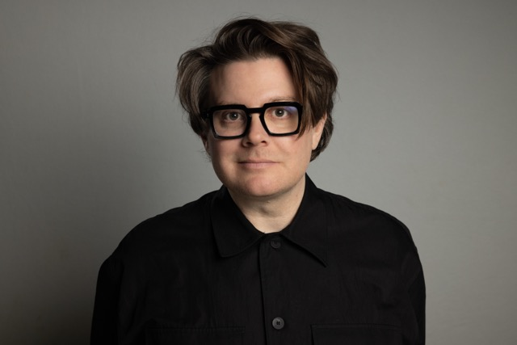

Physicist in a past life. ML leader in this one.

I build and lead data science organizations at internet scale, where models make decisions in milliseconds, billions of times a day. My work has spanned adtech, consumer banking, and programmatic advertising. I'm currently Head of Data Science at Koddi, building the ML systems that power commerce and retail media networks.
I spent the first part of my career as an astrophysicist, studying black holes, including at Caltech. In 2017, work I contributed to at LIGO received the Nobel Prize for the first direct detection of gravitational waves. I left academia in 2015, having co-authored more than 100 scientific papers.
Based in NYC.